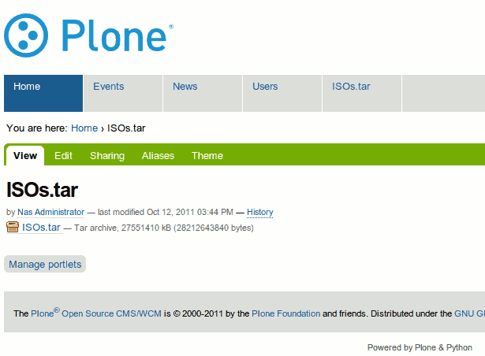

In case you were ever curious, it's definitely possible to upload epic-sized files within the Plone CMS. Browser support aside (Firefox and your 2 GB limits, I'm looking you), I'd previously had issues with being able to upload files larger than 4 GB, if memory serves correctly. Previously, there was an issue with files causing out-of-memory issues, and I'm fairly sure the errors I was getting were related to what was fixed by this change.
For today's test, Google Chrome was able to upload a 26.3 GB (28212643840 bytes) .tar file into Plone on my local machine:
It took a long while (even with my SSD) but it made it. No tracebacks or memory leaks with Plone/Zope so kudos to the developers. It's interesting to note that the file upload process seemingly took 2x (double) the amount of disk space -- half was for a file in the /tmp/ directory, and I didn't end up tracking down the other one. Presumably something like pre-allocated space for the final file, perhaps.
Anyway, it works! Should you do this? Maybe, if you've got space and don't mind hammering your CPU for your server during the upload process. I'll go for larger next time..only problem is my SSD is only 240GB so something like a 500GB file (eg 1TB needed at least) will just have to wait.
Comments !